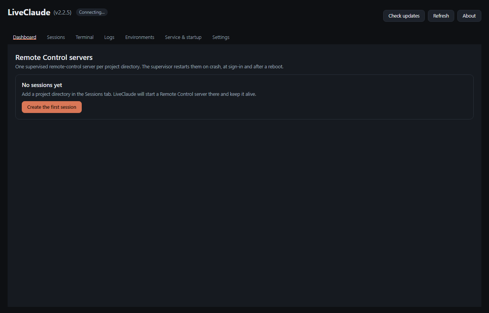
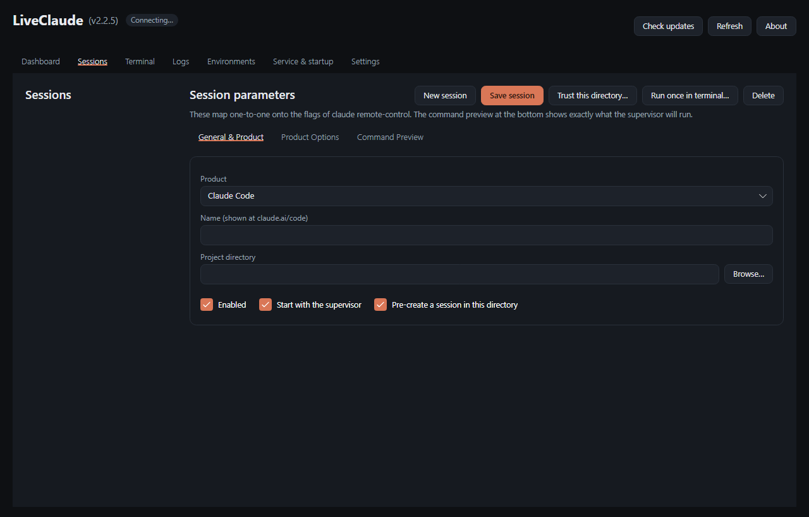
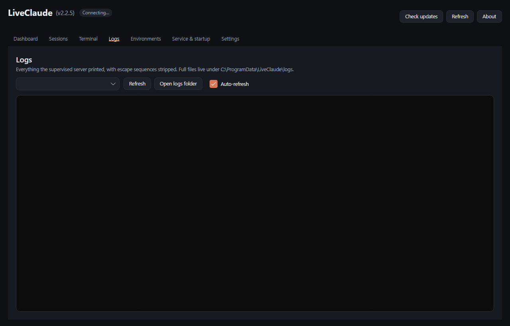
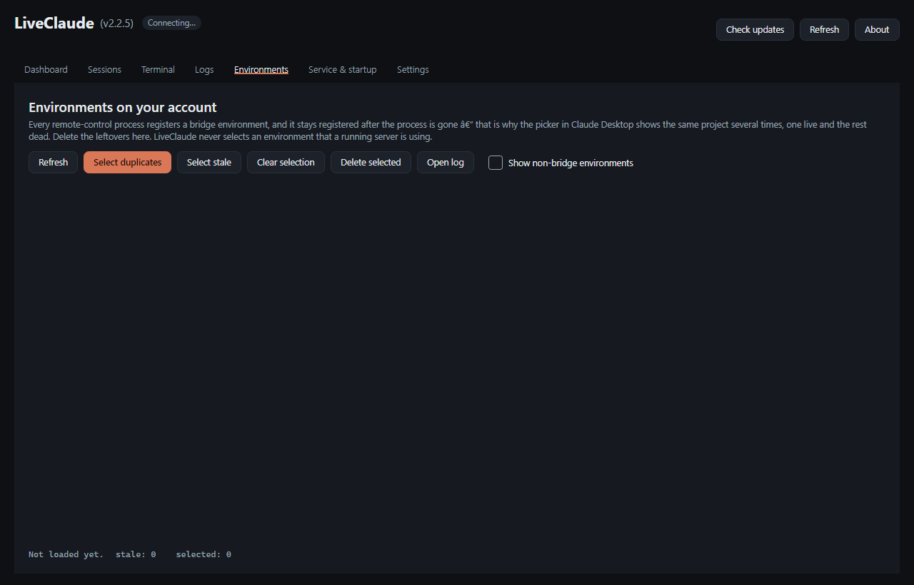
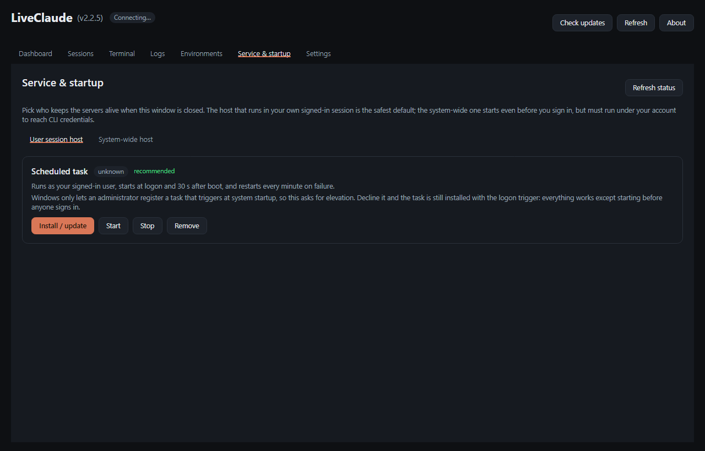
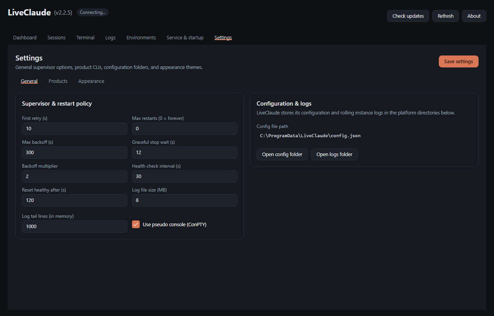
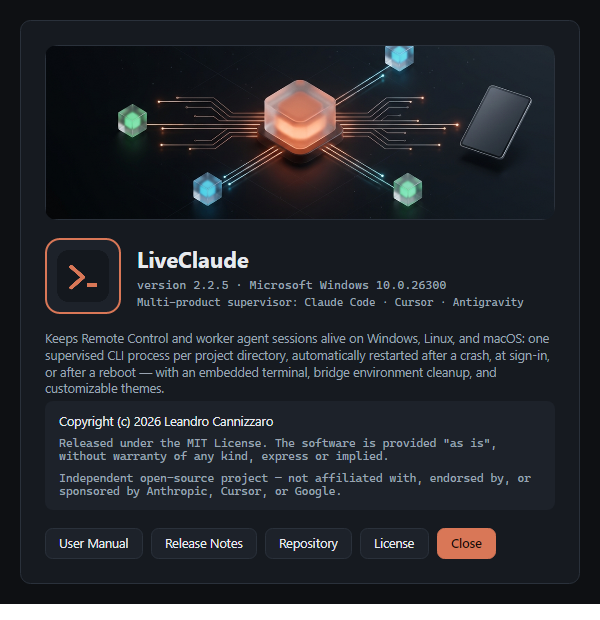

LiveClaude supervises Remote Control and worker agent processes across crashes, sign-ins, and reboots on
Windows, Linux, and macOS — supporting
Claude Code, Cursor My Machines, and Antigravity,
with an embedded pseudo terminal, environment cleanup, custom themes, and cross-platform auto-updates.
Direct installer button automatically picks .msi (Windows x64), .dmg (macOS Intel / Apple Silicon),
or .rpm (Linux x64 / ARM64). Also available as .deb, .tar.gz, portable .zip, and winget.
Windows · Linux · macOSClaude · Cursor · AntigravityEmbedded ConPTY / PTY100% Local Config
🔄
Resilient Supervision
Exponential backoff after crashes, configurable restart budgets, graceful Ctrl+C shutdown, and automatic session reattachment.
🧩
Three Agent Products
Run claude remote-control, Cursor agent worker start, and agy --remote-control side by side from one app.
💻
Embedded Pseudo Terminal
Real ConPTY / POSIX PTY inside the app for workspace trust prompts, interactive login, live steering, and session URL capture.
🎨
Themes & Auto-Update
5 built-in themes + 12-token live Color Picker, plus SHA-256 verified in-app updates across Windows, Linux, and macOS.







Overview
1. Overview & Architecture
Remote Control servers and worker agents normally run as foreground CLI processes inside a terminal window.
If you close the terminal, hit a transient crash, sign out, or reboot your machine, your remote session disappears.
LiveClaude turns those CLI servers into managed background infrastructure.
LiveClaude is split into two cooperating components:
The Supervisor (LiveClaude.Service): a headless background daemon that reads
config.json, spawns one child CLI process per enabled session using a real pseudo console (ConPTY on Windows,
PTY on Linux/macOS), monitors health at a configurable interval, restarts crashed processes with exponential backoff,
and exposes a local IPC endpoint (named pipe on Windows, Unix domain socket on Linux/macOS).
The Desktop App (LiveClaude): an Avalonia desktop UI that connects to the running
supervisor (or starts an in-process/attached supervisor when needed) so you can manage sessions, attach an interactive
terminal, inspect rolling logs, clean up stale Claude bridge environments, configure themes, and install OS autostart hosts.
💡
Closing the window does not kill your sessions
Once you install a User session host or System-wide host in Service & startup, the supervisor
keeps running independently in the background even when the desktop window is closed.
In 2 Minutes
2. Quick Start
1
Install LiveClaude using the direct download button above (.msi, .dmg, or .rpm) or one of the platform package managers.
2
Verify your product CLI in Settings → Products (Claude Code claude, Cursor agent, or Antigravity agy). Leave the path blank to auto-detect, or click Use on a detected installation.
3
Create a session in the Sessions tab: click New session, pick a product, give it a name, select your project directory, and click Save session.
4
Complete first-time trust / sign-in if prompted: click Trust this directory… (Claude), Sign in on the Dashboard card, or open the Terminal tab to answer one-time CLI prompts.
5
Enable background persistence in Service & startup → User session host → Install / update so sessions survive closing the window and logging back in.
Prerequisites
3. System Requirements
Platform
Supported Architectures & Notes
Windows
Windows 10 / 11 (x64 & ARM64). MSI and self-contained ZIPs bundle everything; framework-dependent ZIP requires the .NET 10 Desktop Runtime.
Linux
x64 & ARM64 (.rpm, .deb, .tar.gz). Self-contained; no .NET runtime required. Uses systemd for user/system autostart.
macOS
Apple Silicon (osx-arm64) & Intel (osx-x64) via .dmg. Self-contained; uses launchd (LaunchAgent / LaunchDaemon).
Agent CLIs
At least one supported CLI installed and authenticated: claude (Claude Code), agent (Cursor CLI), or agy (Antigravity CLI).
Setup
4. Installation & Packages
The Download button at the top of this page detects your OS and CPU architecture and links directly to the latest
.msi, .dmg, or .rpm. All assets for every release are also listed on the
GitHub Releases page.
MSI Installer (recommended): run LiveClaude-<version>-x64.msi. Installs per-machine under Program Files\LiveClaude, registers Start Menu shortcuts, and enables one-click in-app MSI upgrades.
Portable ZIP installer: extract LiveClaude-<version>-win-x64-installer.zip and run install.ps1 (per-user in %LOCALAPPDATA%\LiveClaude, or -AllUsers for Program Files, plus -NoInstallCounter to opt out of the setup counter).
Install automatically with the one-line script, or download .rpm / .deb / .tar.gz directly:
curl -fsSL https://leandrocannizzaro.github.io/LiveClaude/install.sh | sh
Packages install to /opt/liveclaude and register desktop entries for LiveClaude.
Install automatically with the one-line script, or open LiveClaude-<version>-osx-arm64.dmg / -osx-x64.dmg and drag LiveClaude.app to /Applications:
curl -fsSL https://leandrocannizzaro.github.io/LiveClaude/install-macos.sh | sh
ℹ️
First launch on macOS
The .dmg is currently unsigned/unnotarized. On first launch, right-click LiveClaude.app and choose Open,
or run xattr -dr com.apple.quarantine /Applications/LiveClaude.app.
Interface
5. Main Window & Top Bar
The top header is always visible and displays global status and actions:
Element
Purpose
LiveClaude (vX.Y.Z)
Application title with the running assembly version shown in parentheses next to the name.
Connection Pill
Shows live IPC connection state to the supervisor (e.g. connected to background service or local mode) plus detected CLI summary below.
Update / Check for updates
Checks update.json on GitHub Releases. When a newer version exists, turns into a highlighted Update to vX.Y.Z button that shows a live download progress bar, SHA-256 verification status, and installer handoff before restarting.
Refresh
Re-queries the supervisor for live instance states, worktrees, and environment status.
About
Right-aligned button opening the About LiveClaude window (top banner artwork, product logo, version, license, GitHub link, and direct link to Release Notes).
Below the header are 7 top-level tabs: Dashboard, Sessions, Terminal, Logs, Environments (shown when Claude environment tracking is enabled), Service & startup, and Settings.
Operations
6. Dashboard
The Dashboard lists every configured session as a status card. Each card shows a color-coded state dot and label
(Running, Starting, Backoff, Stopped, NeedsAttention, Failed),
the working directory, product details/uptime/restart count, any warning message, and quick action buttons:
Start / Stop / Restart: control the individual supervised process. Stopping sends Ctrl+C first and waits GracefulStopSeconds so the CLI can deregister cleanly.
Sign in: appears automatically when a product reports NeedsAttention due to missing or expired credentials; launches the product's interactive login flow.
Terminal: switches directly to the Terminal tab and attaches to that session's live PTY.
Edit: opens the session in the Sessions tab for editing.
Session URL button: when the CLI emits a Remote Control URL, it appears as a clickable pill on the card to open in your browser.
Worktrees flyout: for Claude worktree sessions with active git worktrees, clicking the worktree summary pill lists each branch and worktree path.
Configuration
7. Sessions & Parameters
The Sessions tab uses a master-detail layout with a session list on the left and a no-scroll tabbed editor on the right.
Top Command Toolbar
New session: clears the editor to create a new session entry.
Save session: validates common and product-specific fields, persists config.json, and notifies the supervisor.
Trust this directory…: (Claude only) opens the directory in the embedded terminal to accept Claude's workspace trust prompt once.
Run once in terminal…: runs the exact configured command interactively in the embedded terminal for debugging or one-time prompts.
Delete: removes the selected session from configuration.
Inner Editor Tabs
General & Product: choose Product (Claude Code, Cursor, or Antigravity), Name, Directory (with Browse… picker), Enabled, Start with the supervisor, and (for Claude) Pre-create a session in this directory.
Product Options: dynamically displays all CLI flags specific to the selected product (detailed in Section 8).
Command Preview: renders the exact executable and argument vector that LiveClaude will spawn, with an Update preview button.
Providers
8. Supported Products
LiveClaude isolates each agent CLI in its own product plugin. All three can run concurrently under the same supervisor.
A) Claude Code (claude remote-control)
Option
CLI Flag / Behavior
Spawn mode
same-dir (shared folder), worktree (one git worktree per on-demand session), or session (single fixed session; requires Pre-create a session).
Permission mode
default, acceptEdits, auto, bypassPermissions, dontAsk, or plan.
Capacity
--capacity (1–32 concurrent sessions; ignored in session mode).
Model override
Optional --model passed to the server.
Session name prefix
--remote-control-session-name-prefix for auto-generated session names.
Reattach / Fixed ID
--continue reattaches to the previous session after a restart; or specify a fixed --session-id (only valid with same-dir).
Flags
--[no-]create-session-in-dir, --sandbox, --verbose, plus raw Extra arguments.
B) Cursor My Machines (agent worker start)
Option
CLI Flag / Behavior
Extra worker directories
Up to 20 total --worker-dir roots (the primary directory is always first as the assignment identity).
Per-session API key / auth token
Optional file paths overriding the global paths in Settings → Products → Cursor.
Interactive login fallback
Run agent login in terminal when no key/token is set launches interactive auth on first run.
Flags & Windows SQLite patch
--verbose, --debug, raw Extra arguments, and automatic Windows better_sqlite3.node patching (configurable in Settings).
C) Antigravity Remote Control (agy --remote-control)
Option
CLI Flag / Behavior
Execution mode (--mode)
accept-edits, auto, plan, or CLI default.
Reasoning effort (--effort)
low, medium, high, xhigh, max, or CLI default.
Model / Agent / Project
Optional --model, --agent, and --project overrides.
Additional directories
One path per line, each passed as a repeatable --add-dir argument.
Conversation resume
--continue (default on) to resume the latest conversation, or --conversation <id> (takes precedence over --continue).
Security flags
--sandbox, --dangerously-skip-permissions, and raw Extra arguments.
Interactive Console
9. Embedded Terminal
The Terminal tab embeds a VT100/ANSI terminal emulator connected to a real pseudo console (ConPTY on Windows, POSIX PTY on Linux/macOS):
Attach to: pick any running supervised instance from the dropdown (or jump from the Dashboard's Terminal button) to watch its live output and send keystrokes.
Directory + Open claude here: pick any local folder with Browse… and launch an interactive CLI session directly inside that directory.
Sign in…: runs the selected product's interactive login command right inside the terminal.
Toolbar controls:Stop, Clear, Copy screen, Paste, and Send Ctrl+C.
Diagnostics
10. Logs & Diagnostics
Every supervised instance writes stdout/stderr and supervisor lifecycle events to a rolling log file on disk and keeps a configurable tail in memory.
Instance picker: inspect logs for any configured session.
Auto-refresh: polls for new log lines automatically (can be toggled off while reading older output), alongside manual Refresh.
Open logs folder: opens the OS-native log directory directly in Explorer / Finder / file manager.
Claude Bridge Cleanup
11. Environments (Claude Bridge)
Each time claude remote-control starts, it registers a bridge environment on your Anthropic account that remains listed even after the process exits — causing duplicate entries in the Claude Desktop session picker.
The Environments tab queries the Anthropic bridge API (when Track environments is enabled in Settings → Products → Claude Code) and compares registered environments against live supervised servers:
Select duplicates: keeps the live (or newest) environment per directory and selects all older duplicates for deletion.
Select stale: selects environments no longer backed by any active server.
Delete selected: stops a matching server if still restarting and force-deletes orphaned environment records.
Show non-bridge environments / Open log: toggle visibility of unrelated environments or inspect API diagnostics.
Background Persistence
12. Service & Startup
The Service & startup tab lets you install, start, stop, and remove the background supervisor host without touching the command line:
User session host (recommended)
Runs inside your own signed-in user profile so it immediately sees your CLI credentials, SSH keys, and environment:
Windows: Scheduled Task
Linux:systemd user unit
macOS:launchd LaunchAgent
System-wide host
Starts at boot even before anyone signs in:
Windows: Windows Service (enter your Account and one-time Password so it runs under your profile)
Linux:systemd system unit
macOS:launchd LaunchDaemon
⚠️
Run system-wide hosts under your own user account
Running as LocalSystem or root uses a different home directory, so Claude/Cursor/Antigravity credentials stored in your user profile will not be found.
Customization
13. Settings & Appearance
The Settings tab organizes all global options into three sub-tabs (click Save settings in the top-right to persist to config.json):
A) General
Setting
Default
Description
First retry (s)
10
Initial delay before restarting a crashed process.
Max backoff (s)
300
Maximum exponential backoff cap between restarts.
Backoff multiplier
2.0
Multiplier applied after each consecutive crash.
Reset healthy after (s)
120
Uptime required to reset the backoff counter back to 0.
Max restarts
0
Maximum consecutive restart attempts (0 = restart forever).
Graceful stop wait (s)
12
Seconds to wait after Ctrl+C before force-killing the process.
Health check interval (s)
30
Supervisor health probe cadence.
Log file size (MB) / Log tail lines
8 MB / 1000
Rolling log file cap per instance and in-memory UI tail size.
Use pseudo console (ConPTY)
true
Enables PTY hosting required by the embedded terminal.
Configuration & logs
—
Displays read-only config.json path plus Open config folder and Open logs folder buttons.
B) Products
Configure per-product CLI paths, auto-detected installations (with one-click Use), interactive sign-in triggers, Claude environment tracking, Cursor API key / auth token files, and Cursor Windows SQLite auto-patching.
C) Appearance (Theme Manager & Color Picker)
Switch between 10 built-in presets — Default Dark, Light, Midnight Blue, Forest Dark, High Contrast,
Dracula, Nord, Catppuccin Mocha, Tokyo Night, and Solarized Light —
or customize any of the 12 UI color tokens live using the built-in ColorPicker (BackgroundColor, SurfaceColor,
SurfaceAltColor, BorderColor, TextColor, MutedTextColor, AccentColor,
AccentHoverColor, SuccessColor, WarningColor, DangerColor, TerminalBackgroundColor).
Overrides are saved in config.json under Theme (PresetName and CustomColors) when clicking Save settings.
Upgrades
14. In-App Auto-Updater
On startup (and whenever you click Check for updates in the top bar), LiveClaude fetches
update.json from the latest GitHub Release and compares semantic versions:
Verification: downloads the platform package to a temporary folder and verifies its SHA-256 hash against update.json before executing anything.
Windows: runs msiexec.exe /i ... /passive /norestart for MSI installs, or a PowerShell swap script for portable ZIP installs (elevating automatically for per-machine installs).
Linux: runs a detached apply-update.sh script that waits for LiveClaude to exit, extracts LiveClaude-<ver>-linux-<arch>.tar.gz over the install directory (using pkexec/sudo if needed), and relaunches.
macOS: mounts LiveClaude-<ver>-osx-<arch>.dmg via hdiutil, replaces LiveClaude.app via ditto, clears com.apple.quarantine, detaches, and reopens the app.
You can override the manifest endpoint for air-gapped or staging environments using LIVECLAUDE_UPDATE_MANIFEST_URL.
Reference
15. CLI Commands & Paths
LiveClaude.Service (and the desktop binary when invoked with a verb) supports headless automation commands:
Command
Description
install-autostart --scope user|system
Registers and starts the user or system autostart host. Optional: --no-start-before-sign-in (--no-boot), --user (--account), --password.
uninstall-autostart --scope user|system
Stops and removes the registered autostart host.
start-autostart / stop-autostart
Starts or stops the host for the given --scope.
status
Prints current supervisor and autostart host status.
Anonymous installation counter (opt-out)
At the end of a successful first-time setup (MSI or portable ZIP), the installer requests a single SVG image from hits.sh
without opening a window. It sends no machine names, accounts, tokens, or personal data. Uninstalls, repairs, and normal app launches never ping the counter.
Opt out with INSTALLCOUNTER=0 (MSI) or -NoInstallCounter (install.ps1).
Why does my session keep entering Backoff right after starting?
Usually the CLI needs interactive workspace trust or sign-in first. Open the Logs tab to see the exact CLI error, or click Terminal on the Dashboard card (or Trust this directory… in Sessions) to answer the one-time prompt.
Where is my configuration stored?
Open Settings → General → Configuration & logs to view the exact config.json path on your OS and open the config or logs folder in one click.
Can I disable Anthropic API calls completely?
Yes. Uncheck Track which environment each Claude server registers under Settings → Products → Claude Code and save settings.